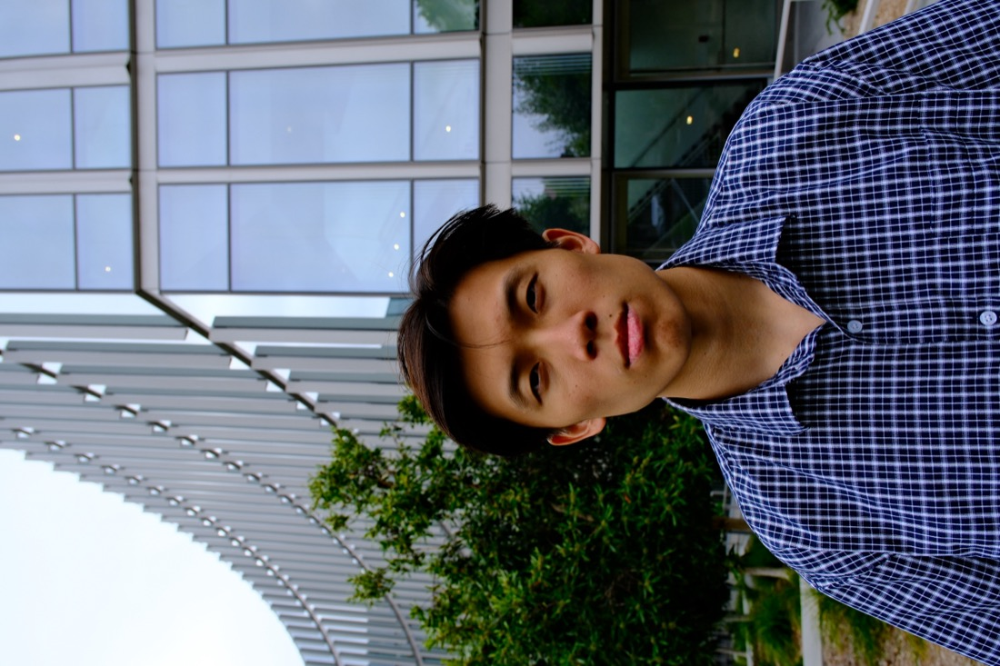
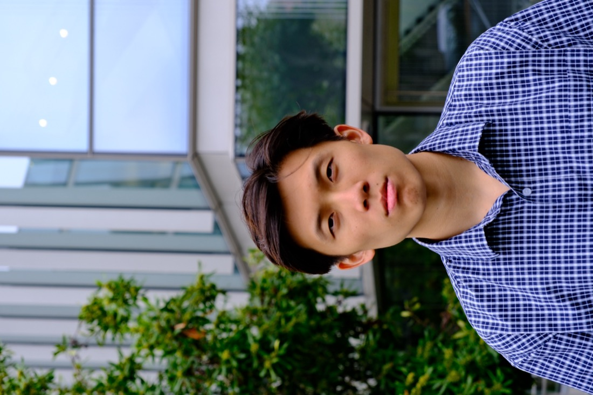
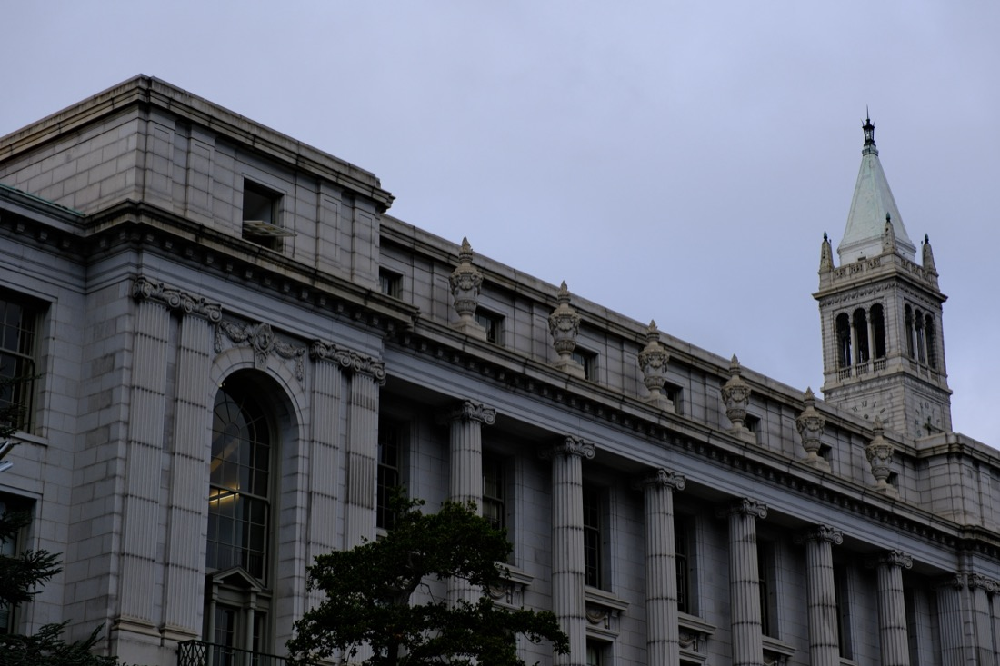
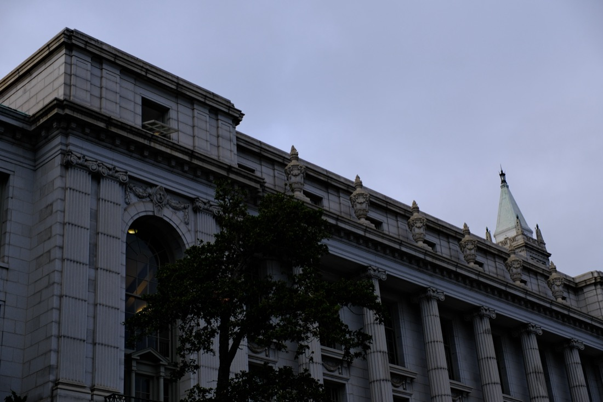
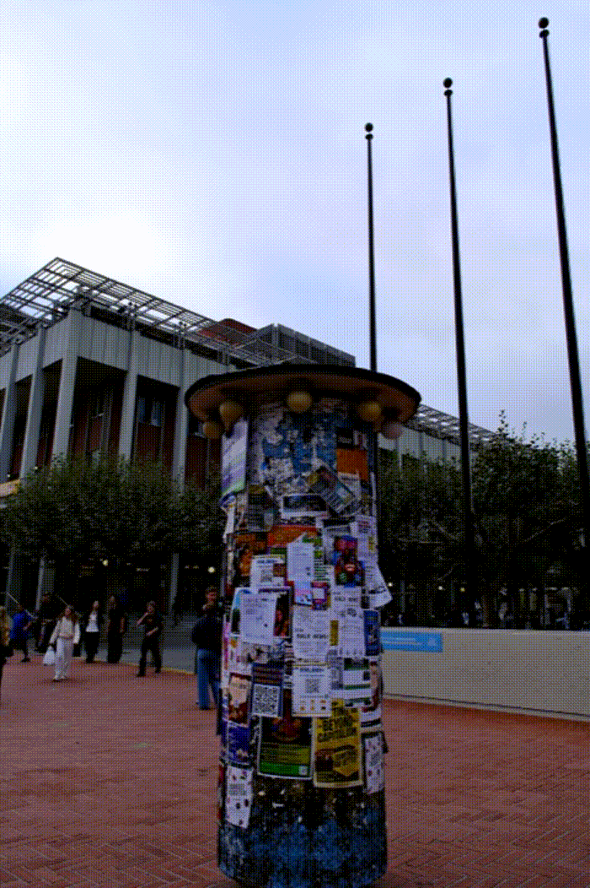

For the first photo, I took a picture of my friend Timothy from close up with no zoom, which made his face have a warped look. For the second, I stepped back and zoomed in until his face was about the same size in the frame. This made the proportions of his face better and more natural.

Close up

Stepped back + zoomed in
I was walking around the school looking for a building and the clock tower happened to be sounding thus I took pictures of the building with the clock tower as the background. Here, I first zoomed in on the building from far away, then walked up close and took the same shot without zoom, matching the size of the building in both frames. The zoomed-in photo looks flatter and more compressed, like the building and the clock tower behind it are squeezed closer together. The close-up photo has much more depth.

Zoomed in from far away

Walked closer, no zoom
For the dolly zoom, I picked a bulletin board covered in flyers as my subject.
